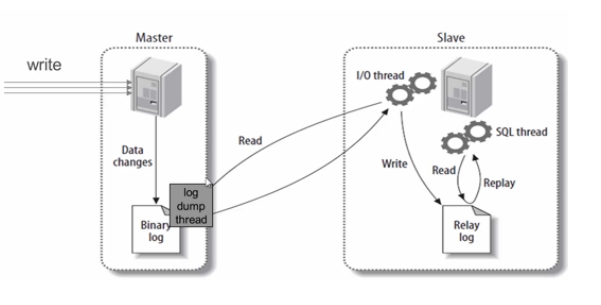
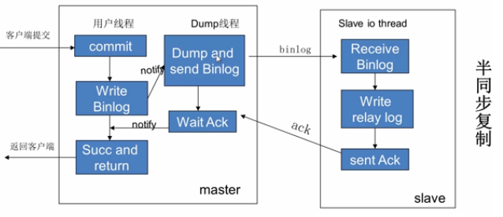

读写分离解决了什么问题带来了什么问题
其实就是将数据库分为了主从库，一个主库用于写数据，多个从库完成读数据的操作，主从库之间通过某种机制进行数据的同步，是一种常见的数据库架构。读写分离是用来解决数据库的读性能瓶颈的。如果使用“读写分离”，就需要注意这些问题：
- 数据库连接池要进行区分，哪些是读连接池，哪个是写连接池，研发的难度会增加；
- 为了保证高可用，读连接池要能够实现故障自动转移；
- 主从的一致性问题需要考虑。
那可能会说是为了解决读的瓶颈为什么不使用缓存？读写分离是通过多个读库，分摊了数据库读的压力，而存储则是通过缓存的使用，减少了数据库读的压力。他们没有谁替代谁的说法，但是，如果在缓存的读写分离进行二选一时，还是应该首先考虑缓存。因为缓存的使用成本要比从库少非常多；缓存的开发比较容易，大部分的读操作都可以先去缓存，找不到的再渗透到数据库。
但是缓存的问题就是在如果缓存一旦挂了，所有的流量都同时聚集到了数据库上，那么数据库是肯定会挂掉的。
数据切分
数据库分库分表
垂直分表：通俗的说法叫做“大表拆小表”，拆分是基于关系型数据库中的“列”（字段）进行的。通常情况，某个表中的字段比较多，可以新建立一张“扩展表”，将不经常使用或者长度较大的字段拆分出去放到“扩展表”中。拆分到多台数据库（主机）上面，这种切分称之为数据的水平（横向）切分。
优点：拆分后业务清晰，拆分规则明确；便于开发和维护；避免“跨页”的问题（MySQL、MSSQL底层都是通过“数据页”来存储的，“跨页”问题可能会造成额外的性能开销）。
缺点：部分业务表无法 join，只能通过接口方式解决，提高了系统复杂度；受每种业务不同的限制存在单库性能瓶颈，不易数据扩展跟性能提高；事务处理复杂。
垂直分库：基本的思路就是按照业务模块来划分出不同的数据库，而不是像早期一样将所有的数据表都放到同一个数据库中。
水平分表：水平分表也称为横向分表，比较容易理解，就是将表中不同的数据行按照一定规律分布到不同的数据库表中（这些表保存在同一个数据库中）。能够降低单表的数据量，一定程度上可以缓解查询性能瓶颈。但本质上这些表还保存在同一个库中，所以库级别还是会有 IO 瓶颈。所以，一般不建议采用这种做法。
优点：降低单表数据量，优化查询性能，提高了系统的稳定性跟负载能力；
缺点：虽然分表了，但本质上这些表还保存在同一个库中，所以库级别还是会有IO瓶颈。所以，一般不建议采用这种做法；有些业务可能还存在查询(根据指定条件查询列表)、分页、排序问题。
最常见的分表方式就是通过主键或者时间等字段进行Hash和取模后拆分。
水平分库：水平分库分表与上面讲到的水平分表的思想相同，唯一不同的就是将这些拆分出来的表保存在不同的数据库中。
切分带来的问题和解决方法
水平切分：分布式全局唯一ID问题：
数据库主从架构是干啥的
它是一个用于数据容错的高可用性的解决方案，而不是一种处理高并发压力的解决方案，它是为了当主机宕机了以后能马上顶上，而不是拿备机分担并发的压力。
主从同步的原理
在master机器上的操作：当master上的数据发生变化时，该事件变化会按照顺序写入bin-log中。当slave链接到master的时候，master机器会为slave开启binlog dump线程。当master的binlog发生变化的时候，bin-log dump线程会通知slave，并将相应的binlog内容发送给slave。
在slave机器上操作：当主从同步开启的时候，slave上会创建两个线程：I\O 线程。该线程连接到master机器，master机器上的binlog dump 线程会将binlog的内容发送给该I\O线程。该I/O线程接收到binlog内容后，再将内容写入到本地的relay log；sql线程。该线程读取到I/O线程写入的ralay log。并且根据relay log。并且根据relay log 的内容对slave数据库做相应的操作。
这个操作它是一个异步的一个操作

从库生成两个线程，一个I/O线程，一个SQL线程；
i/o线程去请求主库 的binlog，并将得到的binlog日志写到relay log（中继日志） 文件中；
主库会生成一个 log dump 线程，用来给从库 i/o线程传binlog；
SQL 线程，会读取relay log文件中的日志，并解析成具体操作，来实现主从的操作一致，而最终数据一致；
mysql主从复制的方式
● 一主一从
● 主主复制
● 一主多从—扩展系统读取的性能，因为读是在从库读取的；
● 多主一从
配置主从同步
1．在主服务器上，必须开启二进制日志机制和配置一个独立的ID
2．在每一个从服务器上，配置一个唯一的ID，创建一个用来专门复制主服务器数据的账号
3．在开始复制进程前，在主服务器上记录二进制文件的位置信息
4．如果在开始复制之前，数据库中已经有数据，就必须先创建一个数据快照（可以使用mysqldump导出数据库，或者直接复制数据文件）
5．配置从服务器要连接的主服务器的IP地址和登陆授权，二进制日志文件名和位置
主从同步的问题
主库宕机后，数据可能丢失
半同步复制—解决数据丢失的问题

事务在主库写完 binlog 后需要从库返回一个已接受，才放回给客户端（性能有一定的降低，响应时间会更长；网络异常或从库宕机，卡主主库，直到超时或从库恢复）
从库只有一个sql Thread，主库写压力大，复制很可能延时
并行复制—-解决从库复制延迟的问题
并行是指从库多线程apply binlog ，库级别并行应用 binlog，同一个库数据更改还是串行的设置 set global slave_parallel_workers=10；设置 sql 线程数为10。